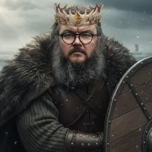

Oi! Meu nome é Maiquel, tenho anos. Casado. Formado em Data Science (2024), Pós-graduando em Inteligência Artificial (2025). Sou Principal Software Engineer & Cloud Architect com experência como Tech Lead. Apaixonado por tecnologia e fazer meu trabalho menos repetitivo, mais divertido e rentável.
Além dessas paixões, amo o Internacional, curto cinema, HQs, seriados, cerveja artesanal ❤, contra-baixo, a literatura de: Isaac Asimov, Bernard Cornwell, George R. R. Martin e atualmente Nicholas Eames.
Jogo RPG com alguma frequência, sendo terror e cyberpunk meus gêneros favoritos. Como bom nerd coleciono RPGs para aprender sobre varios sistemas e sou da opinião que uma boa ideia prevalesce sobre as regras :)
Minha especialidade é projetar e escalar infraestruturas de nuvem de alta performance na GCP e na AWS e implementar sistemas inteligentes de RAG com Qdrant e pgvector e orquestração de agentes com CrewAI e LangChain.
Construo ecossistemas robustos em produção usando Django, Ruby on Rails e Windmill, garantindo estabilidade via Docker Swarm, com experiência usando o ECS/Fargate e CloudRun.
Experiente com Docker e Containers, me aventurando no Kubernetes e Engenharia de IA.
Uso Linux e Software Livre nos meus projetos e na vida. Fanático por automação, background jobs e filas, sempre em busca das melhores soluções para velhos problemas.